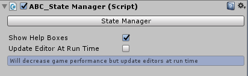

Introduction
Overview
ABC is an editor extension which allows for the creation and activation of abilities and other combat related functionality which is all setup through an editor, without any coding required. The tool revolves around abilities, effects and combat. Some examples of additional functionality includes:
- AI - Automatically activate abilities depending on scenarios
- Health/Mana management
- Target and Auto Target functionality
- Stat creation which can modify the potency of an effect
- Scrollable abilities i.e swapping to a new gun, one at a time
- Full animation control including hit reactions and more
- Fully interactive icon toolbar/book which display cooldowns and more
- UI functionality which can show who is targeted, health/mana, ammo, ability activation progress and more
- Ability grouping which allows for abilities to become enabled or disabled depending on certain events
ABC comes with 2 core components; ABC Controller and StateManager which can be attached to GameObjects. ABC Controller is used to activate abilities. StateManager component is used to interact with abilities and recieve effects.
An object can use both components but it is also possible for an object to only have 1 of the 2. For example an object can have the ABC Controller to activate abilities but doesn't require the StateManager component if the object is not designed to take hits and effects in a vice versa situation an object can have the StateManager component to recieve effects without having the ABC Controller to activate abilities.

ABC Controller Component
ABC Controller is required for creating and activating abilities, targetting objects, managing AI and ability grouping. The component once attached can open up 2 editor windows: Ability Manager and ABC Controller.
The Ability Manager is where abilities can be created. Clicking on each ability will load it's settings in tabs and sections to the side. There is no limit to how many abilities can be created. The object the component is attached to can activate the abilities through different events depending on the setup. Only settings which correspond directly to the current ability setting can be found in this editor window. Settings for other functionallity can be found in the ABC Controller window.
Further details on each setting within the Ability Manager can be found by clicking the following link: Ability Manager.
The ABC Controller window is where all other functionality outside of abilities is setup. This includes setting up Icons, targetting, mana, AI, ability grouping and more. Any setting which doesn't directly relate to an ability will be found in this editor window. There is also additional diagnostic which can be used to provide additional information on features like the state of an ability which has been activated.
Further details on each setting within ABC Controller can be found by clicking the following link: ABC Controller.

StateManager Component
StateManager needs to be added to objects to recieve ability effects and be known by the ABC system for other functionality. The component once attached can open up an editor window.
The editor window is where health, stats, hit animations and other settings can be configured. If an entity does not have the StateManager component then it will not interact with abilities during play. There is also an effect watcher section which can track what effects are currently on the entity and a history of what effects the object previously had which can be used for diagnostic.
Further details on each setting within the StateManager component can be found by clicking the following link: StateManager
